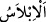

49. Oysa onlar, daha önce, üzerlerine yağmur yağdırılmasından iyice ümitlerini
kesmişlerdi.
“Oysa” durum şu ki “onlar,” yâni yağmur verilenler “daha önce,” yağmur
indirilmesinden önce “üzerlerine yağmur yağdırılmasından iyice ümitlerini
kesmişlerdi.” “
(ümit kesme)”nin anlamı bu sûrenin başlarında geçmişti.
“
” ifâdesi, te’kid için ve onların uzun zamandan beri yağmursuz kaldıklarına ve
tamamen ondan ümid kestiklerine delâlet etmek için yapılmış bir tekrardır.
50. Allâh’ın rahmetinin eserlerine bir bak: Arzı, ölümünün ardından nasıl
diriltiyor! Şüphesiz O, ölüleri de mutlaka diriltecektir. O, her şeye kadirdir.
“Allâh’ın rahmetinin eserlerine bir bak:” Bu hitap Hz. Peygamber (s.a.)’e
yöneltilmiş olsa da onunla mükelleflerin hepsi kasdedilmiştir. “Allâh’ın rahmeti”nden
maksad yağmurdur. Çünkü Allah yağmuru mahlûkatına rahmeti dolayısıyla indirmiştir.
Yâni yağmurun eserleri olan bitkilere, ağaçlara, türlü meyvelere ve çiçeklere bakın.
Âyetin başındaki “fâ” harfi, bu sayılan şeylerin yağmurun indirilmesini çabucak takip
ettiğine delâlet etmek içindir.
Allah Teâlâ “Arzı, ölümünün” kurumasının “ardından nasıl diriltiyor!” Yâni
ölümünden sonra yeryüzünü nasıl eşsiz bir şekilde dirilttiğine bir bakınız.
“Bakmak”tan maksad, Allâh’ın kudretinin büyüklüğüne ve rahmetinin genişliğine
dikkat çekmektir. Bunun yanında tekrar diriltme konusuna da giriş mâhiyetindedir.
“Şüphesiz O,” ölümünden sonra yeryüzüne hayat vermeye kadir olan O şânı yüce
Allah “ölüleri de mutlaka diriltecektir” âhirette onları da diriltmeye kâdirdir. Çünkü,
yeryüzünün tekrar diriltilmesi onda bulunan nebâtî kuvvelerin benzerinin diriltilmesi
olduğu gibi ölülerin diriltilmesi de onların bedenlerinin maddelerinde bulunan canlılık
kuvvelerinin benzerinin var edilmesidir.
“O, her şeye kadirdir.” Yâni her şeye kudreti çok fazladır. İnsanın bedenini
ölümünden sonra haşrde diriltmesi ve kalbini dünyâda öldükten sonra diriltmesi de
buna dâhildir. Çünkü bütün mümkün varlıklara O’nun kudretinin nisbeti eşittir. Her şey
O’nun kudretine bağlıdır. Hiçbir şey O’na büyük/zor değildir. Kulun gücünün aksine
Allâh’ın kudreti kâmildir. Çünkü insanın gücü de Allah Teâlâ’nın kudretinden elde
edilmiştir.
Ey Yüce Rabbim, ne güzel kayyûmsun, bilensin
Güçsüz olanlara bir güç ver